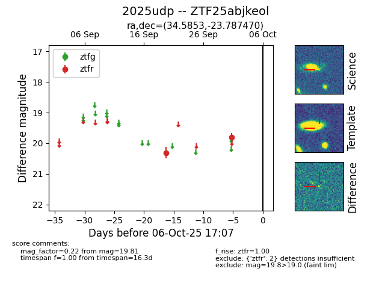

FINK: ZTF25abjkeol
Lasair: ZTF25abjkeol
ALeRCE: ZTF25abjkeol
TNS: 2025udp
YSE: 2025udp
ZTF25abjkeol (ztf,fink)
2025udp (tns,yse)
equatorial (ra, dec) = (34.5853,-23.78747)
galactic (l, b) = (208.0995,-70.12756)

last ztfr=19.81
2 ztfr detections